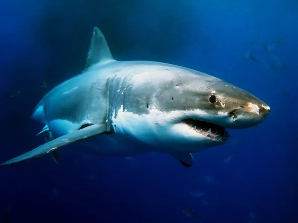

| Description physique |
Le requin se caractérise par sa silhouette fuselée, particulièrement hydrodynamique, et ses nageoires pectorales et dorsales, ainsi que sa nageoire caudale hétérocerque (de forme asymétrique). Il est pourvu d'un squelette entièrement cartilagineux et de cinq à sept fentes branchiales latérales selon les espèces. |
| Son alimentation |
Leur régime alimentaire varie de celui de leurs camarades requins gris et taureau. En effet, ils sont plutôt nourris de crustacés, crevettes, encornet, capelan ou merlan. Les requins-zèbres qui se trouvent dans le lagon tropical mangent également des crustacés et des mollusques. |
| Sa reproduction |
Les requins ovipares pondent des œufs, généralement de grande taille, directement dans l'eau. Ainsi les roussettes pondent des œufs enfermés dans une coque cornée résistante (oothèque) qu'elles attachent à un support sur le fond de la mer. Les requins cornus et certains requins-tapis sont aussi ovipares. |
| Son espérance de vie |
Un requin peut vivire de 10 à 20 ans. |
